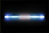

krypton

Definition: Krypton (from Ancient Greek: κρυπτός, romanized: kryptos 'the hidden one') is a chemical element with the symbol Kr and atomic number 36. It is a colorless, odorless, tasteless noble gas that occurs in trace amounts in the atmosphere and is often used with other rare gases in fluorescent lamps. Krypton is chemically inert.
Source: Wikipedia
Wikipedia Page
Wikidata Page